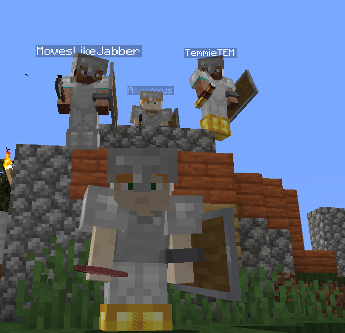

      
      <!DOCTYPE html>
<html>
  <head>
    <meta charset="utf-8">
    <title>Hello, World! - A-Frame</title>
    <meta name="description" content="Hello, World! - A-Frame">
    <script src="https://aframe.io/releases/1.0.4/aframe.min.js"></script>
  <!-- we import arjs version without NFT but with marker + location based support -->
  
<!-- include ar.js for A-Frame -->
<script src="https://jeromeetienne.github.io/AR.js/aframe/build/aframe-ar.js"></script>

    </head>
  <body>
    <a-scene >
      


      
    
      <!-- Using the asset management system. -->
      <!-- <a-gltf-model position="0 0 -4" rotation="-90 0 0" width="4" height="4" src="#tree"></a-gltf-model>
      <a-gltf-model src="scene.gltf"></a-gltf-model> -->


      <!-- <a-assets >
         
      </a-assets> 
      <a-image position="0 2 -4" rotation="0 0 0" width="1" height="1" src="#my-image"></a-image>

      <a-sky color="#131313"></a-sky> 
       -->

      <a-assets>
        
    </a-assets>
     <a-image rotation="-90 0 0"position="0 0 0" width="4" height="4" src="#transpImage"></a-image>

    <a-marker-camera preset='hiro'></a-marker-camera>
     
     
    </a-scene>
  </body> 
</html> 

<!-- <!DOCTYPE html>
<html>
  <head>
    <meta charset="utf-8">
    <title>Hello, World! - A-Frame</title>
    <meta name="description" content="Hello, World! - A-Frame">
    <script src="https://aframe.io/releases/1.0.4/aframe.min.js"></script>
   we import arjs version without NFT but with marker + location based support 
  <script src="https://raw.githack.com/AR-js-org/AR.js/master/aframe/build/aframe-ar.js"></script>
    </head>
  <body>
    <a-scene >
      
      <a-assets embedded arjs>
         
      </a-assets> 
      <a-image position="0 2 -4" rotation="0 0 0" width="4" height="4" src="#my-image"></a-image>

      <a-sky color="#131313"></a-sky> 
      <a-assets>
        <video id="penguin-sledding" autoplay loop="false" src="penguin-sledding.mp4"></video>
      </a-assets>
    
       Using the asset management system. 
      <a-video src="#penguin-sledding" width="16" height="9" position="0 0 -20"></a-video>
     
     <a-entity
          position="0 0 0"
          scale="0.05 0.05 0.05"
          gltf-model="https://arjs-cors-proxy.herokuapp.com/https://raw.githack.com/AR-js-org/AR.js/master/aframe/examples/image-tracking/nft/trex/scene.gltf"
        ></a-entity>
      </a-marker>
      <a-entity camera></a-entity>
    </a-scene>
  </body> 
</html>  -->
